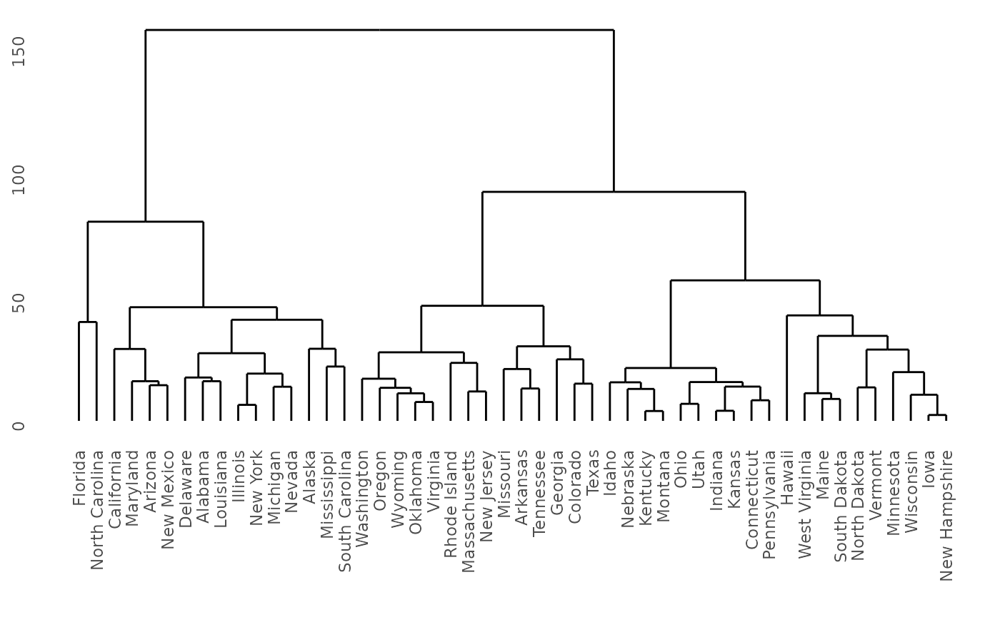
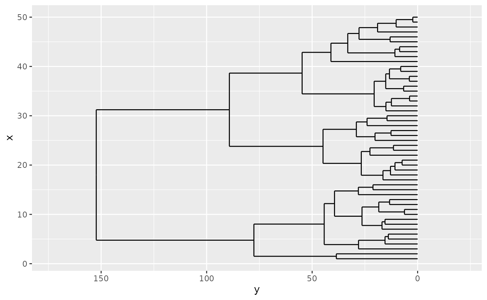
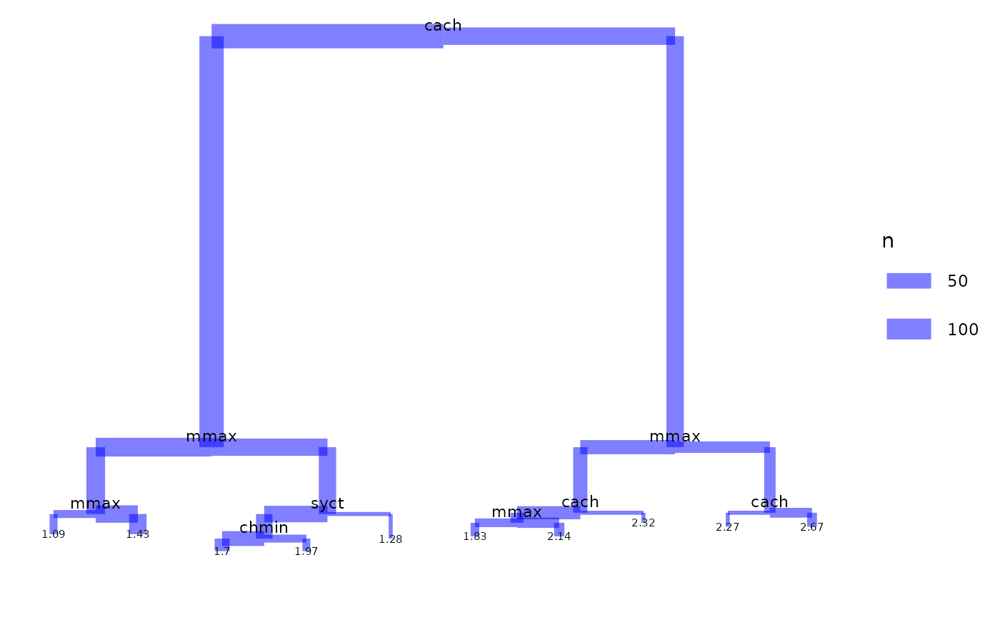
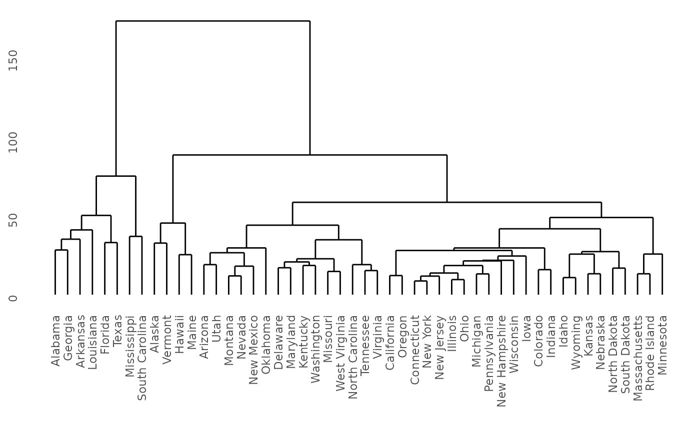

The ggdendro package makes it easy to extract dendrogram
and tree diagrams into a list of data frames. You can then use this list
to recreate these types of plots using the ggplot2
package.
Introduction
The ggdendro package provides a general framework to
extract the plot data for dendrograms and tree diagrams.
It does this by providing generic function dendro_data()
that extracts the appropriate segment and label data, returning the data
as a list of data frames.
You can access these data frames using three accessor functions:
The package also provides two convenient wrapper functions:
-
ggdendrogram()is a wrapper aroundggplot()to create a dendrogram using a single line of code. The resulting object is of classggplot, so can be manipulated using theggplot2tools. -
theme_dendro()is aggplot2theme with a blank canvas, i.e. no axes, axis labels or tick marks.
The ggplot2 package doesn’t get loaded automatically, so
remember to load it first:
Using the ‘ggdendrogram()’ wrapper
The ggdendro package extracts the plot data from
dendrogram objects. Sometimes it is useful to have fine-grained control
over the plot. Other times it might be more convenient to have a simple
wrapper around ggplot() to produce a dendrogram with a
small amount of code.
The function ggdendrogram() provides such a wrapper to
produce a plot with a single line of code. It provides a few options for
controlling the display of line segments, labels and plot rotation
(rotated by 90 degrees or not).
hc <- hclust(dist(USArrests), "ave")
ggdendrogram(hc, rotate = FALSE, size = 2)
The next section shows how to take full control over the data extraction and subsequent plotting.
Extracting the dendrogram plot data using ‘dendro_data()’
The hclust() and dendrogram() functions in
R makes it easy to plot the results of hierarchical cluster analysis and
other dendrograms in R. However, it is hard to extract the data from
this analysis to customize these plots, since the plot()
functions for both these classes prints directly without the option of
returning the plot data.
model <- hclust(dist(USArrests), "ave")
dhc <- as.dendrogram(model)
# Rectangular lines
ddata <- dendro_data(dhc, type = "rectangle")
p <- ggplot(segment(ddata)) +
geom_segment(aes(x = x, y = y, xend = xend, yend = yend)) +
coord_flip() +
scale_y_reverse(expand = c(0.2, 0))
p
Of course, using ggplot2 to create the dendrogram means
one has full control over the appearance of the plot. For example, here
is the same data, but this time plotted horizontally with a clean
background. In ggplot2 this means passing a number of
options to theme. The ggdendro packages
exports a function, theme_dendro() that wraps these options
into a convenient function.
p +
coord_flip() +
theme_dendro()
#> Coordinate system already present. Adding new coordinate system, which will
#> replace the existing one.
You can also draw dendrograms with triangular line segments (instead of rectangular segments). For example:
ddata <- dendro_data(dhc, type = "triangle")
ggplot(segment(ddata)) +
geom_segment(aes(x = x, y = y, xend = xend, yend = yend)) +
coord_flip() +
scale_y_reverse(expand = c(0.2, 0)) +
theme_dendro()
Regression tree diagrams
The tree() function in package tree creates
tree diagrams. To extract the plot data for these diagrams using
ggdendro, you use the the same idiom as for plotting
dendrograms:
if(require(tree)){
data(cpus, package = "MASS")
model <- tree(log10(perf) ~ syct + mmin + mmax + cach + chmin + chmax,
data = cpus)
tree_data <- dendro_data(model)
ggplot(segment(tree_data)) +
geom_segment(aes(x = x, y = y, xend = xend, yend = yend, size = n),
colour = "blue", alpha = 0.5) +
scale_size("n") +
geom_text(data = label(tree_data),
aes(x = x, y = y, label = label), vjust = -0.5, size = 3) +
geom_text(data = leaf_label(tree_data),
aes(x = x, y = y, label = label), vjust = 0.5, size = 2) +
theme_dendro()
}
#> Loading required package: tree
#> Warning: Using `size` aesthetic for lines was deprecated in ggplot2 3.4.0.
#> ℹ Please use `linewidth` instead.
#> This warning is displayed once every 8 hours.
#> Call `lifecycle::last_lifecycle_warnings()` to see where this warning was
#> generated.
Classification tree diagrams
The rpart() function in package rpart
creates classification diagrams. To extract the plot data for these
diagrams using ggdendro follows the same basic pattern as
dendrograms:
if(require(rpart)){
model <- rpart(Kyphosis ~ Age + Number + Start,
method = "class", data = kyphosis)
ddata <- dendro_data(model)
ggplot() +
geom_segment(data = ddata$segments,
aes(x = x, y = y, xend = xend, yend = yend)) +
geom_text(data = ddata$labels,
aes(x = x, y = y, label = label), size = 3, vjust = 0) +
geom_text(data = ddata$leaf_labels,
aes(x = x, y = y, label = label), size = 3, vjust = 1) +
theme_dendro()
}
#> Loading required package: rpart
Twins diagrams: ‘agnes’ and ‘diana’
The cluster package allows you to draw
agnes and diana diagrams.
if(require(cluster)){
model <- agnes(votes.repub, metric = "manhattan", stand = TRUE)
dg <- as.dendrogram(model)
ggdendrogram(dg)
model <- diana(votes.repub, metric = "manhattan", stand = TRUE)
dg <- as.dendrogram(model)
ggdendrogram(dg)
}
#> Loading required package: cluster